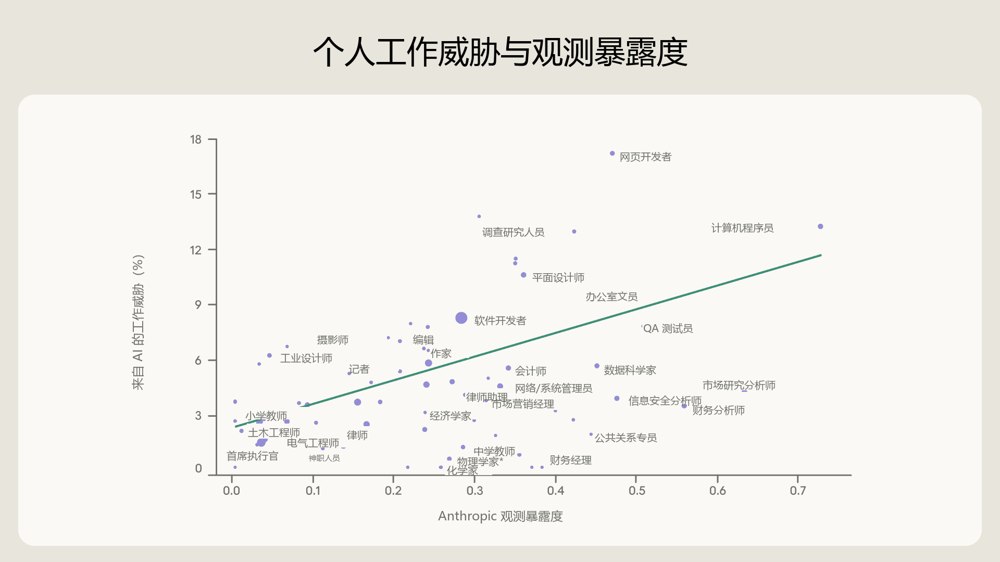
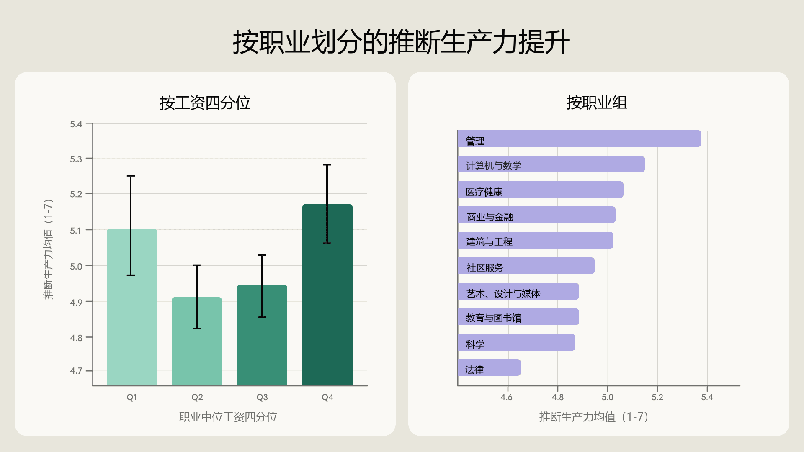
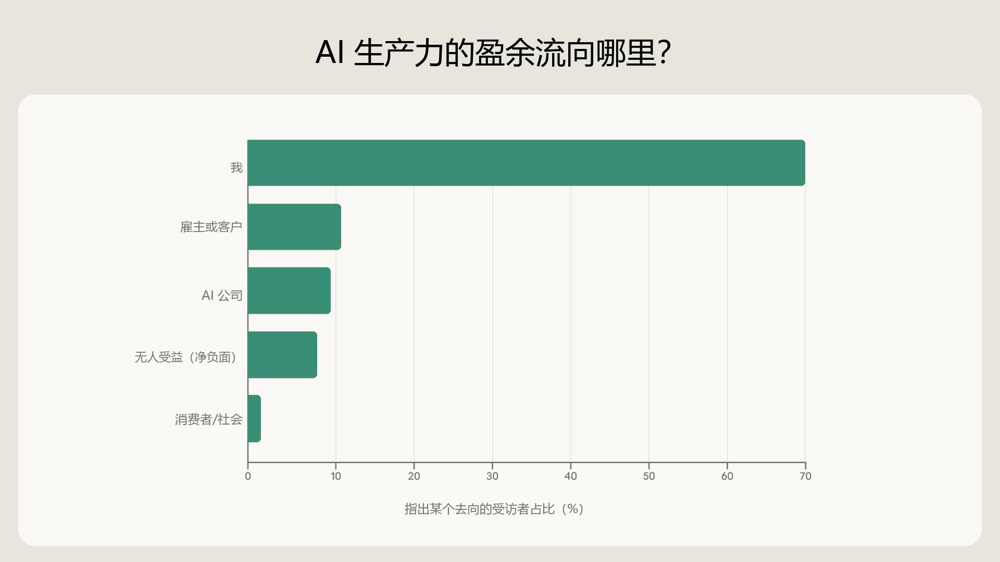

81000人告诉我们的AI经济学
📖 中文摘要
专业术语注解
暴露度：一个岗位中有多少比例任务可由AI完成或被AI用于生产力增益：AI带来工作效率提升的程度岗位替代：工作被自动化系统取代的风险职业阶段：从业者的职业年限与级别（如早期或资深）范围扩大：AI让从业者能够从事以前做不了的新任务📄 中文全文
- 类别： 经济研究（Economic Research）
- 来源： https://www.anthropic.com/research/81k-economics
经济研究（Economic Research）
2026 年 4 月 22 日
阅读 PDF
主要发现：
- 我们最近对 81,000 名 Claude 用户的调查显示，在 AI 暴露度较高的岗位上工作的人对 AI 驱动的岗位置换有更多担忧。这些担忧在职业生涯早期的受访者中也更高。
- 薪资最高和最低职业中的人报告的生产力提升最大，最常见的来源是范围的扩大（做新的任务）。
- 从 AI 中体验到最大提速的受访者表达了对岗位置换的更高担忧。
为了让公众了解我们通过 AI 观察到的经济变化，我们的经济指数分享了 Claude 被要求做什么工作，以及 Claude 在哪些工作中承担了最大比例的任务。然而，到目前为止，我们还缺乏关于这些使用模式如何映射到人们对 AI 的想法和印象上的信息。
我们最近对 81,000 名 Claude 用户的调查研究提供了一种方式，将人们的经济关切与我们已在 Claude 流量中量化的内容联系起来。
这项调查询问了人们对 AI 进步的看法和担忧。人们分享的许多想法都涉及经济话题。我们了解到，许多人担心岗位置换——尽管他们也觉得在工作中更有生产力和更有能力。在某些情况下，AI 使他们能够创业，或给了他们时间做更重要的事情；在其他情况下，AI 让人感到窒息，或者是由雇主强加给他们的。
调查结果提供了初步证据，表明观测暴露度（我们衡量 AI 置换风险的度量）与围绕 AI 的经济关切相关。在高暴露度职业中的人——根据观察到的 Claude 执行的任务来定义——对经济置换更加紧张。这与人们普遍意识到 AI 的扩散和潜在影响是一致的。我们在下文中详细阐述我们的发现。
谁担心岗位置换？
"嗯，就像如今任何一个有白领工作的人一样，我 100% 担心，几乎 24/7 都在担心自己最终会被 AI 抢走工作。"——软件工程师。1
我们调查中五分之一的受访者表达了对经济置换的担忧。有些人是在抽象层面上担心：一位软件开发者警告说「当前状态的 AI 有可能被用来取代初级职位」。另一些人则哀叹他们的工作或他们工作的某些方面正在被自动化掉。一位市场研究员说：「就提高我的能力而言，这毫无疑问。（但）在未来，AI 可能会取代我的工作。」在一些工作中，人们觉得 AI 让工作变得更难了。一位软件开发者观察到：「当 AI 到来时，项目经理开始给越来越难的任务单和 bug 让我们解决。」
在本报告的整个过程中，我们使用 Claude 驱动的分类器从受访者的回答中推断他们的属性和情绪。例如，许多参与者会顺便提到他们的行业，或给出关于他们工作生活的有信息量的细节，这使我们能够推断他们的职业。类似地，我们通过提示 Claude 识别和解读受访者表明自己角色面临 AI 驱动置换风险的直接引述，来量化对失业的担忧。我们在附录中给出了示例提示。
受访者感知到的来自 AI 的威胁与我们的观测暴露度指标相关，后者反映了一个职业中使用了 Claude 的任务所占的百分比。当受访者的观测暴露度度量较高时，该受访者对 AI 更担忧。例如，小学教师对自己被置换的担忧低于软件工程师，这与 Claude 使用偏向编码任务的事实一致。
我们在下面的图 1 中展示了这一点。y 轴是特定职业中表示 AI 已经在取代自己的角色或很快可能取代的受访者百分比。x 轴是观测暴露度。该图显示，平均而言，暴露度较高职业中的人往往对工作被自动化掉表达更多担忧。暴露度每增加 10 个百分点，感知到的工作威胁就增加 1.3 个百分点。暴露度最高的 25% 中的人提到这种担忧的频率是最低 25% 中的人的三倍。

图 1：来自 AI 的感知工作威胁与观测暴露度。 表示受到来自 AI 的某种工作威胁的受访者百分比与 Massenkoff 和 McCrory（2026）的观测暴露度指标。如果受访者表示自己的角色已经被取代或大幅缩减，或者这种变化可能在近期发生，则被编码为表示受到工作威胁（使用 Claude 编码）。绿线显示简单的线性拟合。另一个重要的劳动者特征是职业阶段。在之前的研究中，我们报告了美国应届毕业生和职业生涯早期劳动者招聘放缓的初步迹象。在这项调查中约一半的受访者中，我们能够从他们的回答中推断出职业阶段。[2] 我们发现，职业生涯早期的受访者表达对岗位置换担忧的可能性远高于资深劳动者。
 图 2：按职业阶段划分的对经济置换的担忧。 表示受到来自 AI 的某种工作威胁的受访者百分比，按职业阶段划分。两个字段都是使用 Claude 驱动的分类器从自由形式的回答中推断出来的。
图 2：按职业阶段划分的对经济置换的担忧。 表示受到来自 AI 的某种工作威胁的受访者百分比，按职业阶段划分。两个字段都是使用 Claude 驱动的分类器从自由形式的回答中推断出来的。
谁从 AI 中受益？
使用 Claude 评估调查回复，我们将人们自我报告的来自 AI 的生产力提升程度按 1-7 级评分，其中 1 是「生产力降低」，2 是「没有变化」，之后每个级别表示更大的提升。得分 7 的回答包括这样的证言：「以前要花几个月才能做出我（用）4-5 天（做出来的）网站」；Claude 给「本来要四个小时的事情，一半时间就完成了」这样的陈述打了 5 分，给「就我个人而言，AI 帮我在网站上修复了代码。但我来回折腾了好几次才得到我想要的结果」这样的陈述打了 2 分。[3]
总体而言，人们报告的平均生产力提升是有意义的。平均生产力评分为 5.1，对应「大幅提高生产力」。当然，我们的受访者都是活跃的 Claude 用户，并且愿意接受调查。这可能使他们比普通用户更有可能报告生产力收益。约 3% 的人报告了负面或中性影响，42% 的人没有对生产力给出明确表示。
这在某种程度上按收入线分化。图 3 的左图显示，高薪工作中的人，如软件开发者，传达了来自 AI 的最大生产力提升。这一结果不仅仅由编码驱动；在我们剔除计算机和数学职业后它仍然成立。它呼应了一个之前经济指数的发现，该发现同样有利于高薪劳动者：在需要更高教育水平的任务中，Claude 往往能将完成任务所需时间（相对于不用 AI）减少更高的百分比。
一些薪资最低的劳动者也描述了很高的生产力提升。这包括一位客户服务代表，他「用 AI 帮我节省了很多时间，可以根据另一条回复来创建回复」。在某些情况下，低薪工作中的人还在技术类副业项目中使用 AI。例如，一位送货司机正在用 Claude 创办电子商务业务，一位园艺师正在构建一个音乐应用。

图 3：按职业划分的推断生产力提升。 左图显示按 BLS 的职业中位工资四分位数划分的来自 AI 的平均推断生产力收益（使用 Claude 驱动的分类器推断）。右图显示按主要职业组划分的相同结果。误差线显示 95% 置信区间。我们在图 3 的右图中更详细地研究了这一点，显示了按主要职业组划分的推断生产力提升。排在最前面的是管理职业。这些受访者大多是用 Claude 来创业的企业家。[4] 下一个最高的类别是计算机和数学，包括软件开发者。生产力提升最温和的两个群体是科学和法律职业中的劳动者。一些律师担心 AI 遵循精确指令的能力。例如：「我给出了非常具体的规则，关于什么在哪里、如何阅读法律文件、我想让它做什么……但它每次都偏离。」
随着 AI 在经济中扩散，一个关键问题是收益将流向哪里——流向劳动者、他们的管理者、消费者还是公司。在约四分之一的访谈中，受访者指出了这些收益的接受者。总体而言，这些人中的大多数提到收益流向自己——通过更快的任务、扩大的范围和释放出的时间。[5] 但指名了接受者的受访者中有 10% 表示，雇主或客户正在要求并获得更多工作。较小比例的人提到收益流向 AI 公司，更小比例的人说 AI 将是净负面。这取决于职业阶段：只有 60% 的职业生涯早期劳动者表示他们个人从 AI 中受益，而资深专业人士中这一比例为 80%。

图 4：AI 生产力的盈余流向哪里？ 在指名了自己的 AI 生产力收益受益人的受访者中，指出每个去向的份额。范围与速度
受访者还分享了他们在哪里体验到了生产力提升。我们将其分为范围、速度、质量和成本。例如，许多用 AI 做编码任务的人会说这样的话：「我不是搞技术的人，但现在我是全栈开发者了。」这是范围的扩大；AI 为他们解锁了新的能力。相比之下，一些用户加速了他们已经在做的任务，比如那位会计师说的：「我建了一个工具，帮我在 15 分钟内完成一项以前要花 2 小时的融资任务。」质量提升往往来自对代码、合同和其他文书的更彻底检查。一小部分受访者提到了使用 AI 的低成本：「如果我雇一个社交媒体经理，那会超出我的预算。」
我们发现最常见的生产力增强是在范围方面，48% 明确提到生产力效应的用户引用了这一点。提到生产力的用户中 40% 强调速度。
 图 5：用户报告什么样的生产力提升？ 描述每种生产力收益类型的受访者份额。
图 5：用户报告什么样的生产力提升？ 描述每种生产力收益类型的受访者份额。
人们使用 Claude 的经历也可能塑造他们对 AI 的担忧。为了评估这一点，我们衡量了受访者报告的提速程度，通过提取他们的工作现在是慢得多（我们编码为 1）、速度没有变化（4）、还是变得快得多（7）。
我们发现提速与感知工作威胁之间的关系是 U 形的（见图 6）。最左边的条形显示报告 AI 使他们变慢的受访者。这些受访者更可能表示 AI 对他们的生计构成重大威胁。例如，一些创意工作者，如纯艺术家和作家，发现 AI 过于压抑和僵化，无法在自己的工作中帮到他们。与此同时，他们担心 AI 向创意领域的扩散会使他们更难找到工作。
 图 6：来自 AI 的工作威胁与提速。 表示自己岗位的置换已经在发生或可能近期发生的受访者百分比，按推断提速水平划分。
图 6：来自 AI 的工作威胁与提速。 表示自己岗位的置换已经在发生或可能近期发生的受访者百分比，按推断提速水平划分。
对于其余受访者，感知工作威胁随着他们回答中暗示的提速水平的增加而持续增加。这在经济学上是有道理的：如果完成任务所需的时间在快速缩短，那么该角色的未来可行性可能会有更多不确定性。
讨论
经济指数揭示了人们用 AI 做什么。但理解 AI 经济影响的另一个关键输入是直接听取人们关于他们经历的看法。这里探讨的回答表明，人们的直觉与使用数据吻合：他们最担心的是在我们观察到 Claude 做最多工作的岗位中 AI 的影响。我们还发现职业生涯早期劳动者的经济焦虑水平更高，这与过去的研究一致。
也有迹象表明 Claude 在赋能其用户。人们最常谈论的是收益流向自己，而不是雇主或 AI 公司。高薪劳动者对 AI 生产力影响最为热情，但低薪工作和较低教育水平的人也报告了很大的生产力提升。大多数受访者报告说，Claude 以扩大工作范围或加快工作速度的形式增强了他们的能力。但体验到最大提速的用户也是对 AI 的就业影响最紧张的。
由于数据的性质，我们的分析有重要的注意事项。首先，我们的调查仅限于选择回应的 Claude.ai 个人账户用户。在其他潜在偏见中，这些用户可能更倾向于认为收益流向自己。其次，用户没有被直接问到这里的许多派生变量，所以我们从上下文线索对职业、职业阶段和其他变量的推断可能是错误的。相关地，由于调查是开放式的，我们的度量基于受访者碰巧提到的内容；这些发现应在直接询问这些主题的结构化调查中得到确认。
尽管如此，这些访谈揭示了人们对 AI 经济学感受的真实洞见，展示了定性数据如何能够浮出定量的假设。而且与经济相关的担忧所占的巨大比例本身就是一个强烈的信号。
引用
@online{massenkoff2026interviewer,
author = {Maxim Massenkoff and Saffron Huang},
title = {What 81,000 people told us about the economics of AI},
date = {2026-04-22},
year = {2026},
url = {anthropic.com/research/81k-economics},
}
附录
见链接的 PDF的最后一节。
致谢
我们感谢分享了他们故事的 80,508 位 Claude 用户。 Maxim Massenkoff 领导了分析并撰写了博客文章。Saffron Huang 领导了访谈项目，并在整个过程中提供指导。 Zoe Hitzig 和 Eva Lyubich 提供了关键反馈和方法论指导。Keir Bradwell 和 Rebecca Hiscott 提供了编辑支持。Hanah Ho 和 Kim Withee 为设计做出了贡献。Grace Yun、AJ Alt 和 Thomas Millar 在 Claude.ai 中实现了 Anthropic Interviewer。Chelsea Larsson、Jane Leibrock 和 Matt Gallivan 为调查和体验设计做出了贡献。Theodore Sumers 为数据处理和聚类基础设施做出了贡献。Peter McCrory、Deep Ganguli 和 Jack Clark 提供了关键反馈、方向和组织支持。 此外，我们感谢 Miriam Chaum、Ankur Rathi、Santi Ruiz 和 David Saunders 的讨论、反馈和支持。
脚注
- 我们使用调查中的第一个问题（「你最后一次用 AI 聊天机器人做什么？」）或其他回答中给出的线索来推断人们的职业。
- 这来自书面回答中的各种线索。例如，几个用户提到用 Claude 做作业，这使他们进入职业生涯早期群体。许多人提到经营自己的企业并参与招聘决策，这使他们进入资深群体。
- 该量表不是以中点为基准的，因为大多数人对生产力说正面的话，在原始的利克特量表上几乎全部产生 6 和 7。我们这里使用的量表从 1 = 生产力降低、2 = 没有变化、3 = 略有提高、4 = 适度提高、5 = 大幅提高、6 = 大幅提高（much more）、到 7 = 变革性提高——AI 从根本上改变了他们能生产什么或生产多少。
- 剔除这些「独行企业家」后，管理职业与计算机和数学职业在展示最高生产力收益方面仍然并列。
- 然而，一个主要的注意事项是，这项调查发给了拥有个人 Claude 账户的人。一个更具代表性的图景还应包括企业用户，他们可能更倾向于说价值流向了他们的雇主。
相关内容
了解更多关于 Claude 数学能力的信息
Claude 的一个未发布的研究版本在与黎曼猜想相关的问题上取得了进展。它改进了黎曼 zeta 函数满足该猜想的零点比例的一个长期未破的下界，将其从 41.6% 提高到 67.2%。 了解更多
用 Claude 发现密码学弱点
密码学算法。第一个攻击显著削弱了 HAWK——一种为未来量子计算机能够破解现有标准的世界而构建的数字签名方案。第二个攻击发现了一种攻击轮数缩减的 AES（使用最广泛的对称密码）的新方法。 了解更多
Project Pilot：AI 能操控无人机吗？
我们与 Andon Labs 合作，开发了一系列新的评估来测试 AI 模型使用飞行无人机的能力，最终形成了一个新的基准：Drone-Bench。 了解更多
▸ 英文原文（点击展开）
What 81,000 people told us about the economics of AI
- Category: Economic Research
- Source: https://www.anthropic.com/research/81k-economics
Economic Research
What 81,000 people told us about the economics of AI
Apr 22, 2026
Read the PDF
Key findings:
- Our recent survey of 81,000 Claude users shows that people who work in roles that are more exposed to AI have more concerns about AI-driven job displacement. These concerns are also higher among early-career respondents.
- Those in the highest- and lowest-paid occupations report the largest productivity gains, most commonly from increases in scope (doing new tasks).
- Respondents experiencing the largest speedups from AI express higher concern about job displacement.
In order to inform the public about the economic changes we’re observing with AI, our Economic Index shares what work Claude is being asked to do, and in which jobs Claude is doing the largest share of tasks. To date, however, we’ve lacked information on how these usage patterns map onto people’s thoughts and impressions of AI. Our recent survey study with 81,000 Claude users provides a way to connect people’s economic concerns with what we’ve quantified in Claude traffic. The survey asked people about their visions and fears around advances in AI. Many of the thoughts that people shared touched on economic topics. We learned that many people fear job displacement—though they also feel more productive and empowered at work. In some cases, AI has enabled them to start businesses, or given them time for more important things; in others, AI feels stifling, or imposed on them by their employers. The survey’s results provide initial evidence that observed exposure (our measure of AI displacement risk) is correlated with economic concern around AI. People in highly exposed occupations—as defined by the tasks Claude is observed performing—were more nervous about economic displacement. This is consistent with people being broadly aware of AI’s diffusion and potential impacts. We expand on our findings below.
Who worries about job displacement?
“Well like anyone who has a white collar job these days I'm 100% concerned, pretty much 24/7 concerned about losing my job eventually to A.I.”—Software engineer. 1
One fifth of the respondents in our survey voiced concern about economic displacement. Some worried about this in the abstract: one software developer cautioned about “the possibility of AI in its current state being used to replace junior positions.” Others lamented that their jobs, or aspects of their jobs, were being automated away. One market researcher said, “In terms of improving my capability, it's no doubt. [B]ut in the future AI may replace my work.” In some jobs, people felt it made their work harder. One software developer observed that “when AI arrived, the project managers started giving harder and harder tickets and bugs to solve.”
Throughout this report, we use Claude-powered classifiers to infer people’s attributes and sentiments from their responses. For example, many participants mention their line of work in passing or give informative details about their work life, which allows us to infer their occupation. Similarly, we quantify concerns about job loss by prompting Claude to identify and interpret direct quotes in which respondents indicate that their own role is at risk of AI-driven displacement. We give example prompts in the Appendix.
Respondents’ perceived threat from AI was correlated with our own measure of observed exposure, which reflects the percentage of a job’s tasks for which Claude is used. A respondent was more concerned about AI when our observed exposure measure for that respondent was higher. Elementary school teachers were less worried about their own displacement than software engineers, for example, consistent with the fact that Claude usage skews toward coding tasks.
We show this in Figure 1 below. The y-axis is the percentage of respondents in a given occupation who said that AI is already replacing their role or is likely to do so soon. The x-axis is observed exposure. The plot shows that, on average, people in more exposed occupations tended to express more concern about their jobs being automated away. For every 10-percentage-point increase in exposure, perceived job threat increased by 1.3 percentage points. People in the top 25% of exposure mentioned the worry three times as often as those in the bottom 25%.
Figure 1: Perceived job threat from AI and Observed Exposure. Percentage of respondents indicating some job threat from AI vs. the Observed Exposure measure from Massenkoff and McCrory (2026). A respondent was coded as indicating job threat if they said their role was already being replaced or substantially reduced, or that such changes were likely in the near term (coded using Claude). The green line shows a simple linear fit.
Another important worker characteristic is career stage. In previous research, we reported tentative signs of a slowdown in the hiring of recent graduates and early-career workers in the United States. For about half of respondents in this survey, we were able to infer career stage from their answers.2 We found that early-career respondents were much more likely to express concern about job displacement than senior workers.
Figure 2: Concern about economic displacement by career stage. Percentage of respondents indicating some job threat from AI, by career stage. Both fields are inferred from free-form responses using Claude-powered classifiers.
Who benefits from AI?
Using Claude to assess the survey responses, we rated the extent of people’s self-reported productivity gains from AI on a 1–7 scale, where 1 is “less productive,” 2 is “no change,” and each subsequent level denotes a larger gain. Responses that scored 7 included testimonials like, “It used to take months to make the website I [made] in 4-5 days”; Claude gave a 5 to statements like, “What might have taken four hours was accomplished in half the time,” and a 2 to ones like, “Personally, I had AI help me fix code on a website. But it took multiple passes to get the result I was after.”3
Overall, people reported meaningful productivity gains on average. The mean productivity rating was 5.1, corresponding to “substantially more productive.” Our respondents were, of course, active Claude users who were willing to take a survey. This could make them more likely to report productivity benefits than the average user. Some 3% reported negative or neutral impacts, and 42% did not give a clear indication on productivity.
This splits somewhat across income lines. The left panel in Figure 3 shows that people in high-paying jobs, like software developers, conveyed the largest productivity gains from AI. This result is not driven only by coding; it holds when we leave out computer and math occupations. It echoes a previous Economic Index finding that also favored higher-paid workers: in tasks requiring greater levels of education, Claude tended to reduce the time taken to complete a task (relative to doing it without AI) by a higher percentage.
Some of the lowest-paid workers describe high productivity gains as well. This included a customer service representative using “AI to save me a lot of time with creating a response based on another one.” And in some cases, people in low-wage jobs were using AI on technical side projects. One delivery driver, for example, was using Claude to start an e-commerce business, and a landscaper was building a music application.
Figure 3: Inferred productivity gain by occupation. The left panel shows the mean inferred productivity benefit from AI (inferred using a Claude-powered classifier) by quartile of occupational median wage from the BLS. The right panel shows the same outcome, split by major occupational group. Error bars show 95% confidence intervals.
We look at this in more detail in the right panel of Figure 3, showing the inferred productivity gain by major occupational group. At the top are management occupations. These respondents are mostly entrepreneurs using Claude to build a business.4 The next highest category is computer and math, which includes software developers. The two groups exhibiting the mildest productivity improvements were workers in scientific and legal professions. Some lawyers worried about AI’s ability to follow precise instructions. For example: “I have given very specific rules about what is where, how to read a legal document, what I want it to do… but it diverges every time.”
A key question as AI diffuses through the economy is where the benefits will accrue—to workers, their managers, consumers, or corporations. Respondents indicated the recipient of these gains in about a quarter of interviews. Overall, most of these people cited benefits to themselves, through faster tasks, expanded scope, and freed-up time.5 But 10% of respondents who named a recipient said that employers or clients were asking for and getting more work. A smaller share mentioned benefits to AI companies, and an even smaller share said that AI would be a net negative. This depended on career stage: only 60% of early-career workers indicated that they personally benefited from AI, compared to 80% of senior professionals.
Figure 4: Where does the surplus from AI productivity go? Among respondents who named a beneficiary of their AI productivity gains, the share identifying each destination.
Scope and speed
Respondents also shared where they experienced gains in productivity. We separate this into scope, speed, quality, and cost. For example, many people using AI for coding tasks said things like, “I’m a non tech guy but now I’m a full stack developer.” This is an expansion of scope; AI unlocks new abilities for them. In contrast, some users sped up tasks they were already doing, like the accountant who said, “I built a tool that helps me finish a financing task in 15 minutes that used to take 2 hours.” Quality gains often came from more thorough checks of code, contracts, and other paperwork. And a small share of respondents mentioned the low cost of using AI: “[I]f I hire a social media manager it’s over my budget.”
We find that the most common productivity enhancement is in scope, which was cited by 48% of users who explicitly mentioned productivity effects. 40% of users who mentioned productivity emphasized speed.
Figure 5: What kind of productivity gain do users report? Share of respondents describing each type of productivity benefit.
People’s experience with Claude might also shape their concerns about AI. To assess this, we measured the speedup reported by respondents, by extracting whether their work was now much slower (which we coded as 1), showed no change in speed (4), or had become much faster (7).
We found that the relationship between speedup and perceived job threat is U-shaped (see Figure 6). The leftmost bar shows respondents who reported that AI slowed them down. These respondents were more likely to indicate that AI posed a significant threat to their livelihoods. For example, some creative workers, like fine artists and writers, found AI too stifling and rigid to help them at their own work. At the same time, they feared the diffusion of AI into creative fields would make it harder for them to find work.
Figure 6: Job threat from AI and speedup. Percentage of respondents who said that displacement at their own job was already happening or likely in the near term, by the level of inferred speedup.
For the remaining respondents, perceived job threat increases consistently with the level of speedup implied by their answers. This makes some economic sense: if the time required to do one’s tasks is shrinking quickly, there may be more uncertainty about the future viability of the role.
Discussion
The Economic Index reveals what people do with AI. But another key input for understanding AI’s economic impact is to hear directly from people about their experience. The responses explored here show that people’s intuitions track the usage data: they worry most about AI’s effect in the jobs where we observe Claude doing the most work. We also find higher levels of economic anxiety among early-career workers, which aligns with past research. There are also signs that Claude empowers its users. People are most likely to talk about benefits flowing to themselves rather than to employers or AI companies. High-wage workers were the most enthusiastic about the productivity impacts of AI, but people with low-wage jobs and lower levels of education also reported large productivity gains. Most respondents reported that Claude enhanced their capabilities in the form of broadening the scope of their work or speeding it up. But users experiencing the largest speedups were also the most nervous about AI’s job impacts. There are key caveats to our analysis, owing to the nature of the data. First, our survey is limited to users of personal accounts on Claude.ai who chose to respond. Among other potential biases, these users could be more likely to perceive the benefits as flowing to themselves. Second, the users weren’t asked directly about many of the derived variables here, so our inferences on occupation, career stage, and other variables from contextual clues could be wrong. Relatedly, because the survey is open-ended, our measures are based on what respondents happen to mention; these findings should be confirmed in structured surveys that ask about these topics directly. Still, the interviews surface real insights about people’s feelings around the economics of AI, showing how qualitative data can surface quantitative hypotheses. And the large share of economic-related concerns is a strong signal in itself.
Citation
@online{massenkoff2026interviewer,
author = {Maxim Massenkoff and Saffron Huang},
title = {What 81,000 people told us about the economics of AI},
date = {2026-04-22},
year = {2026},
url = {anthropic.com/research/81k-economics},
}
Appendix
See the final section of the linked PDF.
Acknowledgements
We thank the 80,508 Claude users who shared their stories. Maxim Massenkoff led the analysis and wrote the blog post. Saffron Huang led the interview project and provided guidance throughout. Zoe Hitzig and Eva Lyubich provided critical feedback and methodological guidance. Keir Bradwell and Rebecca Hiscott gave editorial support. Hanah Ho and Kim Withee contributed to design. Grace Yun, AJ Alt, and Thomas Millar implemented Anthropic Interviewer within Claude.ai. Chelsea Larsson, Jane Leibrock, and Matt Gallivan contributed to survey and experience design. Theodore Sumers contributed to the data processing and clustering infrastructure. Peter McCrory, Deep Ganguli, and Jack Clark provided critical feedback, direction and organizational support. Additionally, we thank Miriam Chaum, Ankur Rathi, Santi Ruiz, and David Saunders for their discussion, feedback, and support.
Footnotes
- We inferred people’s occupations using the first question in the survey (“What’s the last thing you used an AI chatbot for?”) or indications given in other responses.
- This came from various indications in the written responses. For example, several users mentioned using Claude for homework, which put them in the early-career group. And many referred to running their own businesses and being involved in hiring decisions, which put them in the senior group.
- The scale is not centered because most people say positive things about productivity, yielding almost entirely 6s and 7s on the original Likert scale. The scale we use here ran from 1 = less productive, 2 = no change, 3 = slightly more productive, 4 = moderately more productive, 5 = substantially more productive, 6 = much more productive, to 7 = transformatively more productive—AI has fundamentally changed what or how much they can produce.
- Removing these “solopreneurs” still leaves management tied with computer and math occupations for showing the highest productivity benefit.
- A major caveat, however, is that this survey went out to people with personal Claude accounts. A more representative picture would also include enterprise users, who may be more likely to say the value accrues to their employers.
Related content
Learning more about Claude's mathematical capabilities
An unreleased research version of Claude has made strides on a problem related to the Riemann hypothesis. It improved a longstanding lower bound for the fraction of zeros of the Riemann zeta function that satisfy the hypothesis, increasing it from 41.6% to 67.2%. Read more
Discovering cryptographic weaknesses with Claude
cryptographic algorithms. The first attack significantly weakens HAWK, a digital signature scheme that was built for a future world where quantum computers are able to break existing standards. The second identifies a new way to attack round-reduced AES, the most widely used symmetric cipher. Read more
Project Pilot: Can AI control a drone?
Working with Andon Labs, we’ve developed a new series of evaluations that assess AI models’ ability to use a flying drone, culminating in a new benchmark: Drone-Bench. Read more